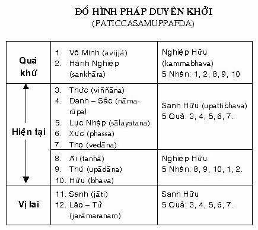
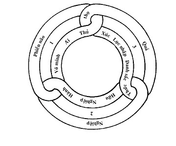
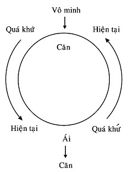
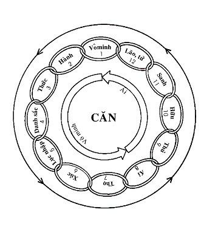

|
Minh Sát Tu Tập ACHAAN NAEB MAHANIRANONDA Tỳ kheo PHÁP THÔNG dịch
VIII. CÁC CĂN BẤT THIỆN (KILESA) Có ba căn bất thiện, đó là: tham (lobha), sân (dosa), si (moha). Thích thú (abhijjha) là một hình thức của tham, và ghét hay không thích (domanassa) là một hình thức của sân. Abhijjha và domanassa không thể khởi sanh một lần, khi có abhijjha thì không có domanassa, và ngược lại. Tham, sân, si thường được gọi là những phiền não (kilesa), nhưng thực ra chúng là các căn (gốc) bất thiện. Dưới các căn bất thiện này là mười phiền não -- ba thuộc tham, ba thuộc sân và bốn thuộc si. Phiền não đầu tiên dưới mỗi căn bất thiện này cũng là gốc bất thiện, do đó, tham, sân, si cũng là các phiền não. Có ba cấp độ phiền não: - Cấp độ một là các phiền não thô, tức những gì được phát tác ra ngoài bằng lời nói và hành động. - Cấp độ hai là các phiền não còn nằm trong tâm, hay là các triền cái (nivarana), chẳng hạn như phóng tâm. - Cấp độ ba là các phiền não ngủ ngầm, loại phiền não lẻn vào qua cảm giác "bạn" đang ngồi và "bạn" cảm giác rằng chính "ta" đang ngồi, chứ không phải sắc. Ðây là phiền não che án hay ngấm ngầm. Phận sự của trí tuệ minh sát là hủy diệt phiền não, dù chúng nảy sanh ở đâu. Bạn của phiền não là lạc. Kẻ thù của phiền não là khổ. Lạc làm cho trí tuệ quên đi sự thực của khổ. Phiền não cũng giống như một tên trộm. Muốn tóm được nó, ta phải biết địa chỉ, hình dáng, đặc tính của nó, cũng phải biết lúc nào nó có mặt ở nhà nữa. Phiền não có sáu "địa chỉ", đó là, mắt, tai, mũi, lưỡi, thân và ý. Hoặc phiền não, hoặc trí tuệ đều có thể ra lệnh cho danh buộc sắc phải làm gì. Chẳng hạn, phiền não nói, "tại sao ta không đi dạo?", nghĩa là, tại sao chúng ta không đi tìm một sự thoải mái nào đó. Trí tuệ biết rằng oai nghi ngồi là khổ, ra lệnh cho sắc "thay đổi oai nghi và đi để chữa khổ". Ðây là trí tuệ làm việc một cách chuẩn xác, bởi vì khổ buộc sắc phải thay đổi oai nghi. Những phiền não thuộc cấp độ một -- phiền não thô -- có thể được khống chế bằng giới, tức là giới có thể diệt được loại phiền não này. Những phiền não thuộc cấp độ hai - các triền cái - thường được biểu hiêïn trong tâm như phóng tâm, chán nản pháp hành,... có thể được đè nén bằng định. Nếu các triền cái trên không được đè nén kịp thời, chúng sẽ phát triển mạnh mẽ và phát tác ra thành lời nói và hành động -- phiền não thô. Ðối với loại phiền não ngấm ngầm cũng vậy, chúng có thể biến thành những tư duy - triền cái. Có năm loại phiền não trong tâm hay năm triền cái là tham dục, sân hận, phóng tâm, hôn trầm và hoài nghi. Hoài nghi ở đây là hoài nghi về Tam Bảo, hoài nghi pháp hành - không biết đó có phải là con đường chân chánh để đoạn tận khổ không, v.v... Những phiền não thuộc cấp độ ba -- phiền não ngấm ngầm hay lậu hoặc -- là loại phiền não vi tế, như si mê, tà kiến, chỉ có tuệ minh sát (vipassanā paññā) mới diệt được. Khi loại này bị diệt thì đương nhiên hai loại trên cũng bị diệt luôn. Phiền não phải được diệt ngay nơi chỗ nó khởi sanh. Chẳng hạn, chúng ta nghĩ lầm cái đau là "ta" - thực ra đó là sắc. Vì thế, chúng ta diệt tà kiến này ở nơi thân, do thấy rằng sắc khổ. Tuy nhiên, đối với cái "thấy" và "nghe" thì cần phải biết đó là danh, bởi vì chúng ta có thể nghĩ "ta" thấy hay "ta" nghe. Vì vậy, chúng ta diệt tà kiến này ở nơi tâm. "Danh thấy", "danh nghe" là thực tánh pháp, hay "thấy", "nghe" như chúng thực sự là. Trong pháp hành này, phận sự của hành giả là tiêu diệt tham và sân hay ưa và ghét (abhijjha và domanassa). Một số hành giả thích ngồi "cho qua" cơn đau, nghĩa là ngồi cho đến khi cái đau biến mất. Làm như vậy vô tình đã tạo thêm sự đắm trước. Nó cũng tạo ra ý nghĩ sai lầm rằng ta có thể kiểm soát được cơn đau, ta có "tự ngã". Ðối với phóng tâm cũng vậy. Nếu hành giả cố gắng kiểm soát phóng tâm, tức là hành giả mong muốn có định hay sự vắng lặng -- đó là một loại tham. Vì vậy, nếu hành giả không kiểm soát được phóng tâm thì sân sẽ sanh khởi. Phóng tâm dạy cho ta biết là không có sự kiểm soát, tức là không có tự ngã. Phóng tâm là danh, không phải là "ta" phóng tâm mà chỉ là danh mà thôi. Nimitta hay tướng xuất hiện trong khi hành thiền, như chớp sáng và các ảo giác khác, cũng là những phiền não. Chúng kéo bạn ra khỏi sát-na hiện tại. Nimitta không phải là minh sát, nó chỉ cho thấy là hành giả có quá nhiều định. Tương tự, một cảm giác lâng lâng và dễ chịu cũng chỉ cho thấy là ta đang định tâm quá mức. Ði kinh hành hay vận động cơ thể được khuyên là để giảm định thái quá này. Nếu hành giả hành thiền định (samatha bhāvanā), hành giả không thể nào thấy các đặc tánh của phiền não, bởi lẽ thiền định có khuynh hướng đè nén tham và sân. Nếu hành giả hành thiền để đoạn tận khổ và không còn tái sanh, thì đây là động cơ chính đáng. Nhưng nếu hành vì một lý do nào khác, chẳng hạn để có những sở đắc, thì đó là phiền não. Nếu hành giả kiên trì thiền định, mặc dù đó là thiện, hành giả cũng không thể đoạn được khổ. Nếu phân loại theo tính chất thì tâm có ba loại: thiện (kusala), bất thiện (akusala) và vô ký hay trung tính (abyākata -- không thiện cũng không bất thiện). Có hai loại thiện, đó là, thiện còn tái sanh và thiện không còn tái sanh (không còn Danh-Sắc).
Có các loại vô ký như sắc (rūpa), Niết Bàn (Nibbāna) và các tâm quả (vipākacitta)... Sắc là vô ký bởi nó vô tri. Tâm quả là vô ký bởi nó không dính líu đến sự phán đoán, không thiện hay bất thiện. Một ví dụ của tâm quả là "danh nghe" trong vipassanā - không có một sự liên hệ hay phán đoán nào trong "cái nghe" đối với âm thanh đang là. Tâm duy tác (kiriyacitta) - tâm của bậc A-la-hán - cũng là vô ký. Niết Bàn là vô ký bởi vì Niết Bàn là đối tượng của tâm đạo (maggacitta) và tâm quả (phalacitta), cả hai đều là pháp siêu thế (lokuttaradhamma) -- không phải thiện cũng không bất thiện. --ooOoo-- IX- KHÁC BIỆT GIỮA THIỀN ÐỊNH & THIỀN MINH SÁT
--ooOoo-- X. DANH & SẮC (NĀMA-RŪPA) Vạn pháp trong thế gian đều là Danh (nāma), Sắc (rūpa) hoặc Năm Uẩn (khandha). Danh-Sắc là thực tại tuyệt đối. Rūpa thường được định nghĩa như là sắc hay vật chất, còn nāma là tâm (citta), tâm sở (cetasika) và Niết Bàn (Nibbāna). Rūpa cũng có thể được định nghĩa là những gì không phải là nāma và bị thay đổi bởi lạnh nóng. Sắc là cái bị biết và danh là cái biết (mặc dù danh cũng có thể biết danh -- nghĩa là danh có thể là một đối tượng hay cái bị biết, như "danh thấy", "danh nghe". Trong pháp hành, sắc có thể được xem như một diễn viên và danh như người quán sát (khán giả). Nói theo ngôn ngữ hiện đại thì sắc giống như phần máy móc của một robot (người máy) và danh là bộ điều khiển. Danh ra lệnh hay bảo sắc những gì phải làm. Danh và Sắc là những đối tượng của pháp hành minh sát. Có nhiều danh và sắc, nhưng hành giả chỉ dùng những Danh-Sắc nào là đối tượng của minh sát trong sát-na hiện tại. Ba loại danh có thể được sử dụng như những đối tượng quán chiếu là thọ (vedanā), tâm (citta) và pháp (dhamma). Những thí dụ điển hình của thọ là những thọ lạc hay khổ; của tâm là tâm với tham, tâm với sân, tâm với si, v.v...; của pháp là "danh nghe", "danh thấy", phóng tâm, v.v... Các loại sắc làm đối tượng quán chiếu trong pháp hành là các oai nghi chính (đi, đứng, ngồi, nằm) và các oai nghi phụ hay oai nghi tạm thời. Oai nghi tạm thời là những tiểu oai nghi hỗ trợ cho oai nghi chính, chẳng hạn như ăn, uống, v.v... (xem phần Phụ lục: Thẩm Vấn Thiền Sinh). Gì là nhân của Danh và Sắc? Nhân của Danh-Sắc là phiền não (kilesa), đặc biệt là vô minh (avijja) và tham ái (tanhā), được xem là nhân căn để của mọi khổ đau. Vô minh có mặt bởi vì chúng ta không nhận ra năm uẩn là khổ, mà nghĩ rằng chúng là lạc. Ðây là điên đảo tưởng (vipallāsa). --ooOoo-- XI. NHÂN DUYÊN CHE ÁN TAM TƯỚNG Tam Tướng hay Ba Ðặc Tánh của hiện hữu ở đây muốn nói tới Vô Thường, Khổ và Vô Ngã trong Danh và Sắc ở mọi thời gian. Nhưng chúng ta không dễ gì thấy được tam tướng ấy trong chính thân và tâm của chúng ta. Tại sao? Bởi vì chúng bị che án do một vài nguyên nhân. Nguyên nhân che án thực tánh vô thường (anicca) trong thân và tâm là santati hay tương tục tính. Sự sanh và diệt nối tiếp nhau một cách nhanh chóng của Danh và Sắc cho ta cái ấn tượng về một vật thể liên tục, mà kỳ thực, chúng được tạo thành và rồi tái tạo thành trong từng sát-na một. Cái che án thực tánh khổ (dukkha) trong thân chính là không biết thân đang ở trong oai nghi nào. Cái che án thực tánh vô ngã (anatta) trong thân và tâm là ghanasañña tức nguyên khối tưởng. Làm thế nào chúng ta có thể nhận ra "bản chất" của ba điều kiện che án này trong pháp hành? 1. Sự sanh diệt của Danh-Sắc diễn ra rất nhanh, khó có thể nhận ra, vì thế nó tạo cho ta cái ấn tượng về một thân - tâm liên tục. Cũng giống như các hình ảnh trên màn hình xi-nê, chúng có vẻ như sinh động, liên tục, nhưng thực sự là được tạo ra bởi những bức hình tĩnh, tách biệt. Danh và sắc cũng vậy, có vẻ như là một thực thể thường hằng, bởi vì chúng ta không thấy được thực trạng sanh diệt [1] của chúng. Chúng ta không thể chấm dứt được sự suy tàn nhanh chóng này (vì nó là thực tánh), tuy nhiên hành giả cần phải thực hành với sự nhiệt tâm và tỉnh thức cho đến khi tuệ minh sát nảy sanh. Chính tuệ này sẽ chỉ cho hành giả thấy được sự tách biệt giữa những chuyển động sanh - diệt ấy. Trí tuệ này sẽ diệt ảo tưởng về tính tương tục che án thực tánh vô thường của Danh-Sắc. Thực tánh vô thường có thể được nhận ra trong sắc bằng tuệ thẩm nghiệm (cintāpaññā), trong khi danh vi tế hơn và rất khó nhận ra. Chẳng hạn, khi thay đổi từ sắc ngồi qua sắc đứng, chúng ta có thể thấy rằng sắc ngồi là vô thường. Ðó là lý do tại sao hành giả trí tuệ yếu nên thực hành pháp niệm thân trong Tứ Niệm Xứ (Kāyanupassanasatipatthanā). 2. Thực tánh khổ bị che án do không biết các oai nghi. Do không biết các oai nghi của thân nên chúng ta không biết rằng nó là khổ. Khổ ở đây có nghĩa là không có khả năng duy trì mãi một điều kiện nào đó (đây là thực tánh pháp, không thể đổi khác được). Khi một oai nghi được thay đổi do có thọ khổ ở oai nghi cũ, nhưng do thiếu tác ý chân chánh nơi oai nghi cũ nên đã ngăn cản không cho chánh niệm -- tỉnh giác hoạt động để thấy thọ khổ này. Nhưng khi chánh niệm -- tỉnh giác quán sát oai nghi liên tục, tác ý chân chánh sẽ làm việc để ngăn tâm phiền não, vì thế, tham sân không thể khởi lên, hành giả sẽ thấy thọ khổ trong mỗi oai nghi cũ. Vì vậy, oai nghi mới không thể che khuất thực tánh khổ đó được. Trong sắc ngồi, khi đau nhức phát sanh, nếu không có tác ý chân chánh, chúng ta sẽ nghĩ rằng "Ta" khổ và sân sẽ nảy sanh, chánh niệm -- tỉnh giác không hoạt động nữa, điều này khiến ta không thích oai nghi cũ. Hành giả liền đứng dậy, bởi vì muốn đứng, và tham phát sanh đối với oai nghi mới. Chính vì oai nghi mới che khuất cái khổ ở oai nghi cũ này mà chúng ta không thể nhận ra thọ khổ trong oai nghi cũ. (Ðây là thí dụ điển hình cho thấy việc không biết oai nghi sẽ che khuất khổ như thế nào.) Thọ khổ trong oai nghi cũ thường rất dễ nhận ra khi chánh niệm -- tỉnh giác làm việc, song "hành khổ" (sankhāradukkha -- cái đau được đưa vào oai nghi mới) lại rất khó nhận ra, bởi vì oai nghi mới thường có vẻ như là một thọ lạc. Nếu hành giả muốn nhận ra cái khổ trong oai nghi mới, hành giả phải có tác ý chân chánh, bởi vì ái (tanhā), hay sự ưa thích (abhijjha) thường nảy sanh trong oai nghi mới và sự không thích hay ghét (domanassa) nảy sanh ở oai nghi cũ. Ái thích lạc và không thích khổ; vì thế, muốn diệt ái chỉ có một cách duy nhất là phải có Tuệ Minh Sát để nhận rõ khổ. Bởi lẽ đó, Ðức Phật đã mô tả những giai đoạn tuệ sẽ diệt được tham ái, bằng sự chứng thực khổ. Khổ trong pháp hành phải được chứng thực bằng bốn cách: 1) Thấy thọ khổ (dukkhavedanā) trong oai nghi cũ. 2) Thấy hành khổ (sankhāradukkha) khi chuyển sang oai nghi mới. 3) Thấy khổ tướng (dukkhalakkhana), tức thấy Danh-Sắc là vô thường, khổ và vô ngã -- cho đến khi sự tách bạch của tương tục tính (santati) được chứng nghiệm ở Tuệ thứ tư -- Sanh Diệt Tuệ (udayabbayañāṇa). 4) Chứng ngộ khổ đế (dukkhasacca) ở Tuệ thứ mười một -- Hành Xả Tuệ (sankhārupekkhāñāṇa). Ðây là Trí Tuệ rất mạnh, nó dẫn đến Tuệ thứ mười hai -- Thuận Thứ Tuệ (anulomañāṇa), chứng ngộ Tứ Thánh Ðế. Nếu pháp hành không dẫn đến sự chứng ngộ khổ với trí tuệ, đó không phải là pháp hành chân chánh, không phải là Trung Ðạo (tức Bát Thánh Ðạo). Chỉ có chứng ngộ khổ mới dẫn ta ra khỏi vòng luân hồi (samsāravatta), nó sẽ dẫn đến sự yếm ly (nibbidā) trong năm uẩn và đưa đến sự đoạn tận khổ. Nếu không chứng Tuệ thứ tám -- Yếm Ly Tuệ (nibbidāñāṇa), thì cũng không thể ly dục (virāga -- vắng mặt các dục, vắng mặt tham ái), và dĩ nhiên khổ không thể đoạn tận. Khi, bằng trí uệ, hành giả chứng thực rằng Danh-Sắc là vô thường, khổ và vô ngã, hành giả sẽ cảm thấy chán nản (yếm ly) đối với cái khổ của Danh và Sắc. Ðó là con đường thanh tịnh. Vì vậy, hành giả phải có tác ý chân chánh để nhân ra khổ trong oai nghi mới. Hành giả cũng phải biết ý do tại sao phải thay đổi oai nghi; thay đổi oai nghi với tác ý chân chánh như vậy có được lợi ích gì (tuệ minh sát có thể phát sanh); và nếu không thay đổi oai nghi thì sao (phiền não sẽ lẻn vào). Thông thường, hành giả sơ cơ không biết được lý do của việc thay đổi oai nghi. Họ nghĩ rằng họ muốn thay đổi oai nghi, trong khi sự thực là khổ buộc phải thay đổi. Khi hiểu được sự thực đó và thường xuyên quán sát nó, hành giả sẽ nhận ra khổ, đồng thời thấy ra rằng, oai nghi mới cũng chẳng khác gì hơn oai nghi cũ. Như vậy tham sẽ không phát sanh với oai nghi mới và sân cũng sẽ không khởi lên đối với oai nghi cũ. Ðiều này dẫn đến trí tuệ thấy rõ rằng tất cả Danh-Sắc đều nằm ngoài sự kiểm soát, chúng không có tự ngã -- đây là thực tánh pháp (sabhāva). Khi thực tánh pháp đã được trực nhận, sự tinh tấn càng phát triển, và phiền não sẽ suy yếu. Lúc này, sự nỗ lực, kiên trì sẽ mạnh mẽ hơn, hành giả đạt đến trí tuệ Sātipaṭṭhāna (Niệm Xứ), tiêu diệt tham và sân trong năm uẩn. 3. Nguyên khối tưởng (ghanasañña) của Danh và Sắc là thực tánh pháp (sabhāvadhamma) hay pháp chân đế (paramatthadhamma). Nhưng dù nó là thực như vậy, nó vẫn dẫn chúng ta đến tà kiến nghĩ rằng có một tự ngã, nên có thường và lạc nơi Danh-Sắc. Như vậy, nguyên khối tưởng đã che khuất thực tánh của Danh-Sắc, vốn là vô ngã (anatta). Do đó, hành giả cần phải có tác ý chân chánh để tách bạch Danh và Sắc, nhờ vậy chấm dứt ảo tưởng chúng hoạt động như một thực thể duy nhất. Không có tác ý chân chánh, chúng ta sẽ không biết cái nào là Danh, cái nào là sắc. Hơn nữa, các Sắc cũng khác biệt nhau, sắc ngồi khác sắc đứng, sắc đứng khác sắc đi, v.v... Sáu lãnh vực minh sát (vipassanā bhūmi) rất hữu ích cho việc nhận ra sự tách biệt của Danh và Sắc là Năm Uẩn (khandha), 12 Xứ (ayatana), 18 Giới (dhātu), 22 Quyền (indriya), Tứ Thánh Ðế (Ariyasacca), Thập Nhị Nhân Duyên (paticcasamuppāda). Chẳng hạn, với Ngũ Uẩn, chúng ta có thể thấy rằng sắc uẩn (rūpakhandha) đang ngồi, và chính thức uẩn (viññānakhandha) biết rằng sắc uẩn đang ngồi (với ba tâm sở là thọ, tưởng và hành). Như vậy, chúng ta có thể thấy rõ sự tách biệt của Danh và Sắc. Việc thực hành để thấy rõ bản chất của nguyên khối tưởng cũng giống như việc thực hành để quán sát Danh và Sắc (không nên cố tình tách rời hai việc ấy). Tuy nhiên, hành giả cần phải hiểu rằng, danh biết sắc ngồi và danh biết sắc đứng không phải là một. Và thậm chí, "sắc" khi ngồi cũng không phải là "sắc" khi đứng. Việc thực hành cứ kiên trì như vậy cho đến khi tà kiến do nguyên khối tưởng tạo ra bị hủy diệt. Việc thấu suốt tương tục tính thực chất là vô thường và thấy rõ nguyên nhân sự thay đổi oai nghi chính là khổ, cũng giống như viêïc thực hành để thấy rõ nguyên khối tưởng vậy; không có gì khác hơn là quán Danh-Sắc để chúng được thấy, được tách bạch một cách rõ ràng. Sự diệt trừ tà kiến do nguyên khối tưởng tạo ra sẽ dẫn đến Tuệ thứ nhất -- Tuệ Phân Biệt Danh-Sắc (Nāma-rūpa-paricchedañāṇa). Ðây cũng là Kiến tịnh -- Diṭṭhivisudhi -- theo bảy cấp độ thanh tịnh. Nếu tuệ thứ nhất không đạt được thì các Tuệ tiếp theo cũng không thể dạt được. Việc thực hành để thấu triệt các điều kiện che án Tam Tướng, không cần phải kế tục cả ba, chỉ cần nhận ra một tướng là đủ. Nếu bạn thấy rõ cái gì che án vô thường, bạn cũng sẽ thấy rõ khổ và vô ngã. --ooOoo-- XII. PHÁP DUYÊN KHỞI (PATICCASAMUPPĀDA) Pháp Duyên Khởi hay Thập Nhị Nhân Duyên (Paṭicchasamuppāda) là một chuỗi nhân và quả tạo thành một vòng xích mười hai mắc (nidana: nhân duyên), minh họa những điều kiện khiến cho có sự sanh và tái sanh. Chính thực tánh pháp chi phối các hiện tượng nhân quả này, với mỗi nhân duyên tạo điều kiện cho nhân duyên kế tiếp khởi lên. Nó khởi lên trong vòng luân hồi (samsāra-vatta) và không thể nào ngăn được. Chỉ có nhân và quả, hoàn toàn không có một tự ngã hay tha lực trong thế gian này hay thế gian khác chi phối nó. Không một người hay một sức mạnh bên ngoài nào có thể làm cho điều này xảy ra, nên gọi là Pháp Duyên Khởi, và trong pháp này, chỉ có nhân và duyên (paccāya). Chẳng hạn, vô minh (avijjā) là duyên đưa đến hành nghiệp [2]... Pháp Duyên Khởi đề cập ở đây chỉ nói đến sự trở thành trong thế gian này, như một con người. Mười hai mắt xích nhân duyên của Pháp Duyên Khởi được trình bày như sau:
Duyên Vô Minh, Hành Nghiệp sanh Từ Vô Minh đến Lão - Tử đã chấm dứt Pháp Duyên Khởi thực thụ. "Sầu, Bi, Khổ v.v..." chỉ là những gì tiếp nối cho thấy rằng mỗi lần sanh đều dẫn đến Khổ (dukkha) - Thánh Ðế Thứ Nhất. Pháp Duyên Khởi hay Thập Nhị Nhân Duyên còn được gọi là Hữu Luân -- Bhavacakka. Hễ còn nằm trong vòng luân hồi thì bánh xe này chẳng thể nào dừng lại được. 1. Ðịnh Danh 1) Vô Minh (avijjā) là không thông đạt Tứ Ðế. 2) Hành Nghiệp (sankhāra) không phải là hành uẩn trong ngủ uẩn. Hành Nghiệp ở đây là nghiệp tích lũy từ kiếp quá khứ đưa đến tái sanh. Có ba loại: Phước Hành (puññābhasankhāra), Phi Phước Hành (apuññābhasankhāra), Bất Ðộng Hành (āneñjābhasankhāra, Tứ thiền vô sắc) 3) Thức (viññāṇa) tức Thức tái sanh (patisandhi viññāna) 4) Danh-Sắc (nāma-rūpa) là ba tâm sở: thọ, tưởng, hành, cộng với sắc do nghiệp sanh (kammajārūpa). 5) Lục Nhập (sālaàyatana) tức nhãn, nhĩ, tỷ, thiệt, thân và ý xứ. 6) Xúc (phassa) nói đêùn tâm sở hướng tâm đến đối tượng của Lục Nhập. 7) Thọ (vedanā) là tâm sở cảm nhận thọ lạc hay thọ khổ, ... 8) Ái (tanhā) là sở hữu tham (lobha-cetasika), cảm thấy mong muốn khi sáu căn hoạt động. 9) Thủ (upādāna) là tâm sở phát xuất từ sở hữu tham, nhưng cường độ mạnh hơn. 10) Hữu (bhava) là nghiệp hữu (kammabhava), hay sự hiện hữu trong đó các nghiệp thiện ác được tạo tác. 11) Sanh (jāti) nói đến Năm Uẩn hay Danh-Sắc. 12) Lão - Tử (jaramaranaṃ) sự tiếp nối đương nhiên của sanh hữu. Ðức Phật mô tả pháp Duyên Khởi này để chúng ta có thể nhận ra sự thực của mọi hiện hữu, chúng phát sanh khi có đủ nhân và duyên. Ðiều này giúp chúng ta nhận ra Danh-Sắc là vô thường, khổ và vô ngã. Vô minh được xem là mắc xích đầu tiên trong chuỗi duyên khởi, nhưng thực ra nó cũng giống như một bánh xe hay một vòng tròn, không có điểm khởi đầu hay kết thúc. Tuy nhiên, vô minh là mấu chốt của những mắc xích trong chuỗi duyên khởi, bởi lẽ nó là nhân căn để của mọi phiền não. Sự diệt vô minh bằng trí tuệ là cách duy nhất để phá vỡ chuỗi duyên khởi. Vô minh xuất phát từ các lậu hoặc -- dục lậu, hữu lậu, kiến lậu và vô minh lậu. Thế nhưng cả bốn lậu này lại bắt nguồn từ vô minh. Vô minh đó là bất tri Tứ Thánh Ðế. Một lần, Trưởng lão Ananda thưa với Ðức Phật rằng, Pháp Duyên Khởi này thật là tuyệt diệu và dễ hiểu. "Không phải đâu", Ðức Phật nói, "Pháp Duyên Khởi rất là thâm sâu và khó hiểu đấy." Nếu có người nào muốn nghiên cứu về Pháp Duyên Khởi, tốt nhất nên tìm một cuốn sách đặc biệt viết về đề tài này và chắc chắn sẽ vô cùng kinh ngạc trước trí tuệ thâm sâu của Ðức Phật. Lợi ích của pháp này là ngăn được ngã kiến, do thấy rằng các pháp phát sanh do duyên và hoàn toàn không có tự ngã, linh hồn hay Thượng đế v.v... tạo dựng ra cái gì cả. Chứng thực Thập Nhị Nhân Duyên (Hữu Luân) thì hủy diệt được tà kiến như thế nào? Sự thực chứng Pháp Duyên Khởi sẽ hủy diệt Ðiên Ðảo Tưởng (vipallāsa) bằng năng lực của trí tuệ. Khi hành giả nhận ra vô minh là duyên của hành nghiệp, nó sẽ diệt tà kiến cho rằng một Ðấng Quyền Năng nào đó đã tạo dựng nên mọi sự. Nhận ra hành nghiệp làm duyên cho kiết sanh thức hay thức tái sanh sẽ diệt được ngã kiến (sakkāyadiṭṭhi), bởi lẽ không phải "ta" được sanh ra mà chỉ có thức tái sanh. Do thức làm duyên nên có Danh-Sắc (tức các tâm sở và sắc do nghiệp sanh). Ðiều này làm thay đổi tà kiến cho rằng Danh-Sắc là có tự thể và thường hằng. Do Danh-Sắc làm duyên mà có lục nhập. Ðiều này làm chuyển đổi tà kiến cho rằng "ta" nghe, "ta" thấy,... Do lục nhập làm duyên mà có xúc và xúc thực sự được hình thành từ sự tương giao giữa căn -- trần -- thức. Vì thế, tà kiến cho rằng căn, trần, thức là tự ngã bị hủy diệt. Do xúc làm duyên mà sanh thọ, như lạc thọ, khổ thọ, ... nên tà kiến cho rằng "ta" lạc hay "ta" khổ được chuyển đổi. Do thọ làm duyên mà sanh ái (được diễn tả dưới dạng các tâm sở, là tham tâm sở), tà kiến cho rằng dục lạc trong các hữu đưa đến hạnh phúc được tiêu diệt. Do ái làm duyên mà có thủ, thủ này do tham tâm sở và tà kiến tâm sở tạo thành, vì thế tà kiến cho rằng những gì khả ái, khả lạc,...đáng chấp giữ, được chuyển đổi. Do thủ làm duyên mà sanh hữu, nhờ biết rõ điều này mà diệt được tà kiến cho rằng khi con người chết là hết, không có sự tái sanh. (Thực ra, thủ duyên hữu ở đây là tư tâm sở trong 29 tâm gồm 12 bất thiện tâm, 8 dục giới đại thiện tâm, 5 sắc giới thiện tâm và 4 vô sắc giới thiện tâm. Sở hữu tư (cetana) là nghiệp tạo ra quả (vipāka) -- quả đó chính là tái sanh hay hữu). Do hữu làm duyên nên có sanh [3], điều này hủy diệt tà kiến cho rằng năm uẩn là lạc. Do sanh làm duyên mà có già - chết. Thấy được diều này, tà kiến cho rằng năm uẩn là tịnh, là thường và có tự ngã sẽ chuyển đổi. Những phương diện của Pháp Duyên Khởi Pháp Duyên Khởi có thể được nhìn theo bảy cách như: các chi (12 chi); ba tục đoạn (móc nối); ba thời (quá khứ, hiện tại, vị lai); bốn yếu lược; v.v... Tuy nhiên, ở đây chỉ đề cập đến một vài phương diện quan trọng. 1) Hai mươi Hành Tướng. Nếu phân tích kỹ thì 12 chi trong Pháp Duyên Khởi tạo thành 20 hành tướng (ākāra). Năm nhân từ quá khứ đến hiện tại: Vô Minh, Hành Nghiệp, Ái, Thủ, Hữu. Năm quả hiện tại: Thức, Danh-Sắc, Lục Nhập, Xúc, Thọ. Năm nhân hiện tại: Ái, Thủ, Hữu, Vô Minh và Hành . Năm quả vị lai: Thức, Danh-Sắc, Lục Nhập, Xúc, Thọ. ÐỒ HÌNH PHÁP DUYÊN KHỞI (PATICCASAMUPPADA) Hình 3  CHÚ THÍCH Quá khứ có năm nhân quyết định sanh hữu hiện tại của chúng ta. Vô minh (1) là nhân căn để, là hậu quả do không có trí tuệ siêu thế (lokuttara). Do vô minh này, sống trong thế gian, chúng ta tạo tác các nghiệp, kể cả thiện lẫn ác, gọi là Hành Nghiệp (2). Chẳng hạn, nếu chúng ta hành thiền định để chứng đắc các thiền hữu sắc hoặc vô sắc, chúng ta vẫn còn nằm trong tam giới và vẫn tạo nghiệp (mặc dù đó là nghiệp thiện). Và điều này dẫn đến Ái (8). Khi Ái trở nên mạnh mẽ, nó chuyển thành Thủ (9). Chúng ta muốn một điều gì là Ái, song khi chúng ta sở hữu vật đó, nó trở thành Thủ. Thủ này dẫn đến Hữu (10). Có hai loại hữu: nghiệp hữu (kammabhava) và sanh hữu (upattibhava). Nghiệp hữu là các tác nghiệp thiện hay bất thiện, nó quyết định cho tương lai của chúng ta. Sanh hữu là tiến trình hiện hữu của một lần sanh mới, được quyết định bởi nghiệp hữu. Mỗi mắc xích trong năm nidana (nhân duyên) ở quá khứ làm duyên (paccāya) cho năm nidana kế tiếp, và quả lúc đó sẽ trở lại làm duyên cho những nidana tiếp nữa. Nghiệp Hữu (kammabhava) hàm ý sự sáng tạo của nghiệp, bởi vì ở bất kỳ sanh hữu nào, chúng ta cũng vẫn ở trong vòng luân hồi. Thực tánh pháp (sabhāvadhamma) vốn là pháp duyên khởi, là quy luật -- khi tạo tác bất cứ nghiệp gì thì phải thọ lãnh quả của nghiệp đó -- mà không ai có thể thoát khỏi hoặc thay đổi. Ðây là quy luật tự nhiên, là chân lý. Năm quả hiện tại (Thức, Danh-Sắc, Lục Nhập, Xúc, Thọ) là kết quả của kiếp trước. Trong kiếp hiện tại, nó tiêu biểu cho những phẩm chất (hành tướng) mà con người thọ lãnh khi tái sanh vào một sanh hữu. Năm nhân trong hiện tại (Ái, Thủ, Hữu, Vô Minh Và Hành) do quả thứ năm (Thọ) trong hiện tại đưa đến. Nhân đầu tiên là Ái, Ái dẫn đến Thủ, Thủ đến Hữu, rồi đến Vô minh và Hành Nghiệp (8, 9, 10, 1, 2). Hữu ở đây là Sanh Hữu (uppattibhava), chính Hữu này quyết định kiếp sống mới. Hữu dẫn đến vô minh bởi con người không thông đạt Tứ Ðế. Nhân Vô minh lại tiếp tục tạo Hành Nghiệp. Hành, trong nhóm này, là khi người ta tạo tác các nghiệp thiện (kusala) và bất thiện (akusala). Năm quả của vị lai (Thức, Danh-Sắc, Lục Nhập, Xúc, Thọ), đầu tiên do hành làm duyên cho Thức tái sanh (patisandhi viññāna). Bốn chi kế là danh và sắc trong kiếp hiện tại. Như vậy có tất cả là hai mươi hành tướng. Hai mươi hành tướng này tựa như một bánh xe, không có khởi điểm cũng không có kết thúc. Tuy thế, Ðức Phật biết rằng Vô minh vẫn là nhân căn để của nó. 2. Tam Luân (tivaṭṭa) Ở phương diện này, chúng ta sẽ nhìn Thập Nhị Nhân Duyên dưới dạng Tam Luân hay Ba vòng xoay. -
Phiền Não Luân (kilesavaṭṭa) muốn nói đến Vô minh (1), Ái (8),
Thủ (9). Hình 4  3. Nhị Căn (mūla) Ðể hiểu được Pháp Duyên Khởi, vấn đề quan trọng là phải biết rằng có hai gốc (căn) tác nghiệp là Vô minh và Ái. Vô minh là nhân căn để cho Ái, và Ái, ngược lại cũng là nhân căn để cho Vô minh. Vô minh thuộc về quá khứ và Ái thuộc hiện tại. Tuy nhiên, chúng đều là gốc (căn) cho nhau, và vòng xoay của nó có thể đi theo hai cách. Gốc đầu tiên - Vô minh - dẫn đến Thọ, mắc xích thứ bảy. Thọ dẫn đến Ái (mắc xích gốc thứ tám), Ái đến Thủ (9), Thủ đến Hữu (10), Hữu đến Sanh (11), Sanh đến Lão - Tử (12). Người tánh tà kiến (diṭṭhicarita) cho rằng không có nhân quả, không có tội phước và tái sanh. Ðó là lý do tại sao Ðức Phật trình bày Vô minh như là nhân căn để (gốc), mục đích để chỉ ra rằng có nhân (Vô minh) và quả - trong hiện tại là Thức tái sanh (3), dẫn đến Danh-Sắc (4), Lục Nhập (5), Xúc (6), Thọ (7). Những mắc xích - từ 3 đến 7 - thuộc hiện tại do Vô minh và Hành trong quá khứ tạo ra. Bao lâu con người còn Vô minh, chừng đó vẫn còn thọ quả. Ái do thọ làm duyên, đưa đến Thủ và Hữu. Ba mắc xích này tiếp tục xoay vòng lại đến Vô minh và Hành. Năm mắc xích -- Ái, Thủ, Hữu, Vô minh, Hành -- là những nhân hiện tại và là quả của Vô minh. Quả của Vô minh và Hành được lặp lại từ 3 đến 7 trong kiếp hiện tại. Khi Ái có mặt thì Ái, Thủ, Hữu, Vô minh và Hành trở thành nhân trong hiện tại. và cứ vậy, bánh xe sanh tử xoay vòng mãi. Mỗi lần con người tái sanh (11) thì Thức, Danh-Sắc, Lục Nhập, Xúc, Thọ lại có mặt và dẫn đến Lão - Tử (12). Do thấy được quả của Ái, tà kiến cho rằng mọi vật là thường, không già, không biến hoại, hay những người nặng tham ái (rāgacarita), có thể thấy ra rằng Danh-Sắc dẫn đến Lão - Tử. Trong vòng sanh tử này, chúng ta cứ tiếp tục tái sanh trong tam giới (loka) -- Dục giới, Sắc giới và Vô sắc giới -- hoặc 31 cõi (bhūmi). Muốn thoát khỏi cái khổ trong tam giới này, chúng ta phải hành Tứ Niệm Xứ, theo những nguyên tắc đã được trình bày trong Kinh Ðại Niệm Xứ, là Pháp đầu tiên trong 37 Pháp Trợ Giác Ngộ (Bodhipakkhiyadhamma), đưa đến sự chứng ngộ Tứ Thánh Ðế. Hình 5 & 6   --ooOoo-- [1] Dĩ nhiên, sự sanh và diệt của danh và sắc nhanh hơn những hình ảnh trong xi-nê rất rất nhiều. [2] Ba loại hành nghiệp có thể quyết định sanh thú của một người là phúc hành, phi phúc hành và bất động hành. [3] Có bốn sanh loại (yoni): Thai sanh (jālabaja); noãn sanh (andaja); thấp sanh (saṃsedaja); hóa sanh (opapātika). -ooOoo- Ðầu trang | Mục lục | 1.1 | 1.2 | 1.3 | 2.0 | 3.0 | 4.1 | 4.2 | 4.3 | 4.4 |
Chân thành cám ơn Tỳ kheo Pháp Thông đã gửi tặng bản vi tính (Bình Anson, 08-2003)
[Trở về
trang Thư Mục]
last updated: 20-08-2003